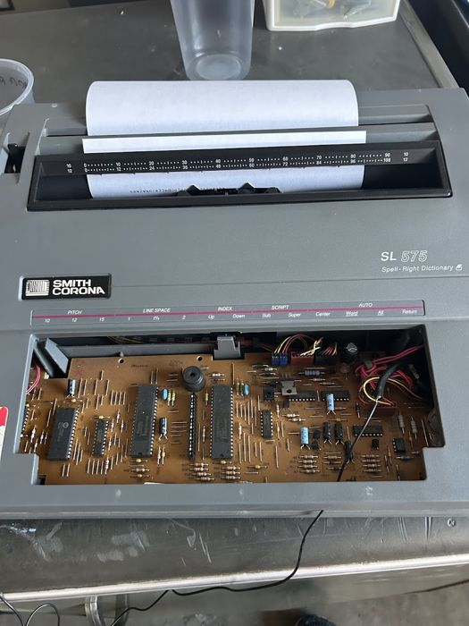
Automatic Typewriter
A Smith Corona SL575 that types on its own but still works by hand. I reverse-engineered its 17-pin keyboard matrix with no documentation.
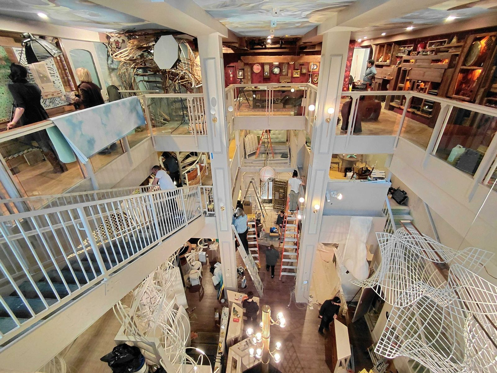
The Ministry of Awe is an interactive art experience built inside a former bank in Old City. I was the engineer on the team: artists, magicians, and the AI studio Spatial Pixel would bring me an idea, and I'd figure out how to build it, wire it, code it, and keep it running for visitors 40–50 hours a week on an art-project budget.
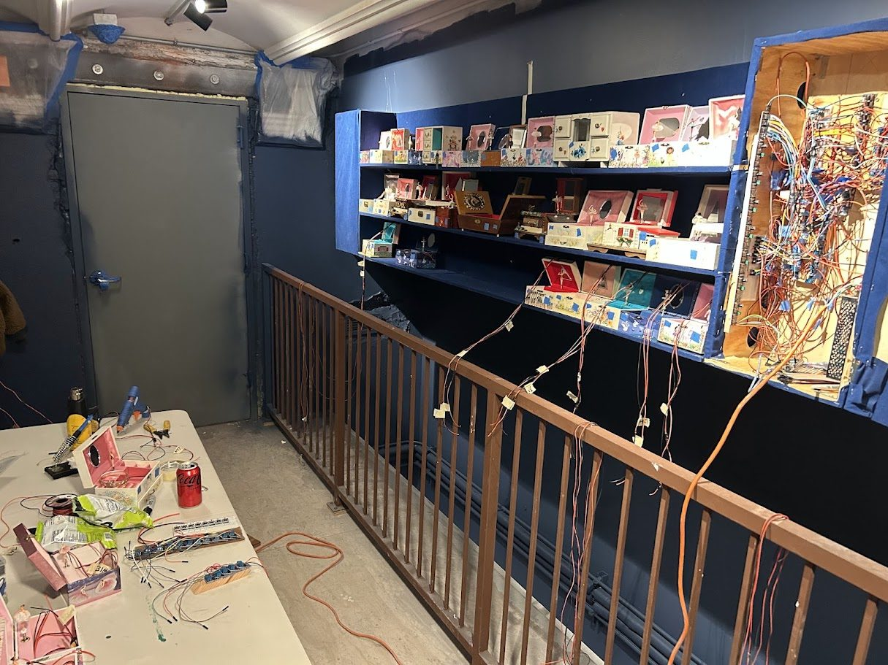
After the prototype worked, I had to put 45 music boxes on one wall and wire every one of them: motors, lights, and speakers. They run off an Arduino with IO expanders.
The room has a custom soundtrack and a holographic projection, and everything had to stay in time with the music. I set up the whole room to start on a single pulse when the music begins. Everything plays for ten minutes, then the next pulse resets it and the show starts over.
Looking back, I'd design a custom controller board instead of hand-wiring that panel. It worked, but a board would have made it far easier to debug and maintain.
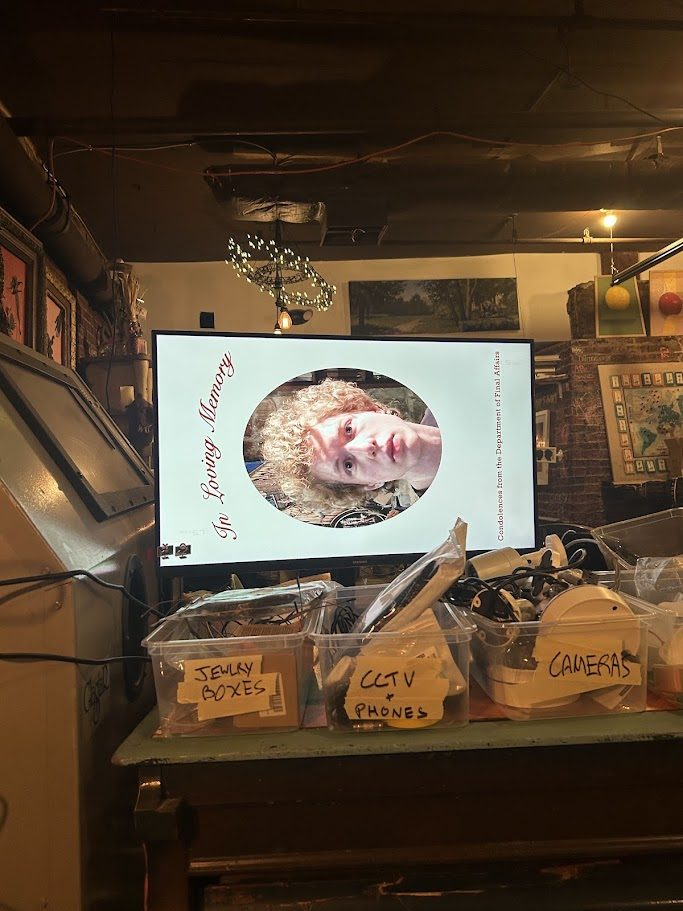
I worked with two magicians on this room. They came up with the ideas, and I built them. Earlier in the experience, visitors look into a mirror. There's a camera hidden behind it. A few rooms later, they find a funeral-style memorial screen with their own face on it.
It all runs on a Raspberry Pi. When it sees a face, it takes a burst of photos and ranks each one on how sharp it is and how straight-on the person is looking, throwing out the losing candidates. Every 30 seconds, if it has a new photo, it fades it in so the change looks smooth. It starts on its own when plugged in and recovers safely from reboots. This one was a big hit with visitors.
Another idea from the magicians: visitors sign a birth certificate and walk away with a death certificate carrying their signature.
I used a Raspberry Pi with a touchscreen set up like a kiosk, and a cheap receipt printer, which fit an art-project budget. Anything drawn on the screen is saved and laid over the certificate image. The lines match up, so a signature in the right spot lands in the right spot on paper, but people can draw anywhere they want. Three seconds after the last touch, it assumes you're done and prints.
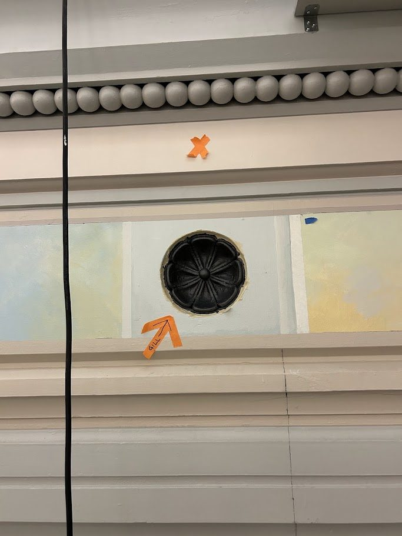
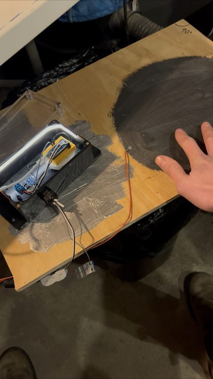
The Heavens is an interactive room, and the team wanted visitors to touch the rosettes on the walls to change what happens in the space.
I painted the rosettes with a paint mixed with graphite powder so they conduct, and read them with the capacitive sensing pin on an ESP32 Arduino Nano. Each sensor constantly broadcasts its value so the room's main computer can read it and change the projections based on what people touch.
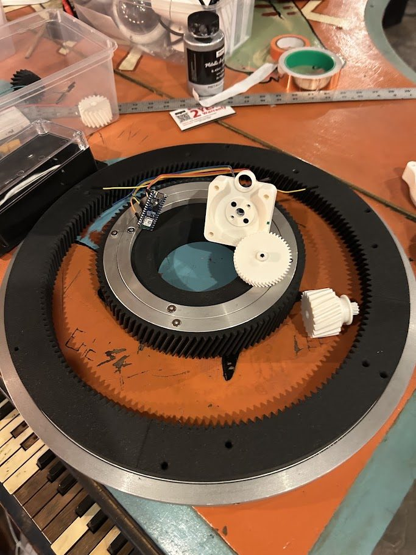
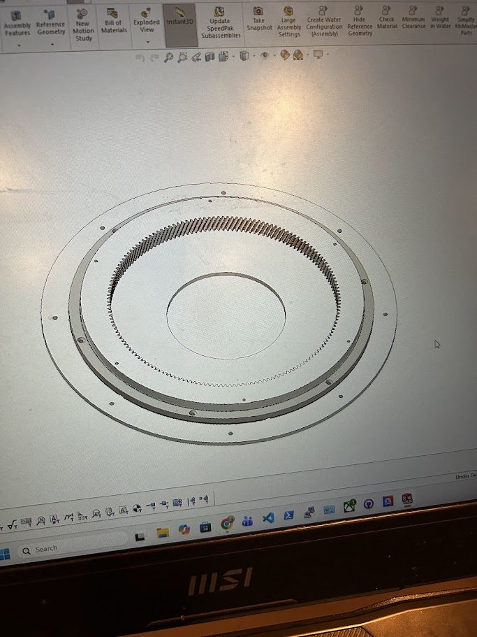
The ask was two turntables, one inside the other, that could spin forever in either direction while the computer always knows where each one is.
I designed two large ring gears and split them along their diagonals for 3D printing, so the pieces would re-attach easily. Small gears ride on each ring and drive a gearbox that spins a magnet at exactly 1:1 with the ring. A magnetic encoder on an ESP32 Arduino Nano reads each magnet and sends both angles to the PC.

A Smith Corona SL575 that types on its own but still works by hand. I reverse-engineered its 17-pin keyboard matrix with no documentation.
An old Victor receipt printer on a turntable with a hidden camera. It tracks faces, turns toward a visitor, and starts printing.
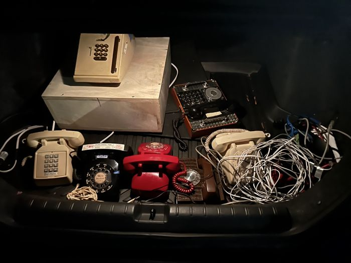
An offline phone network so an actor watching CCTV can call visitors in real time, plus secret lines with recorded messages.
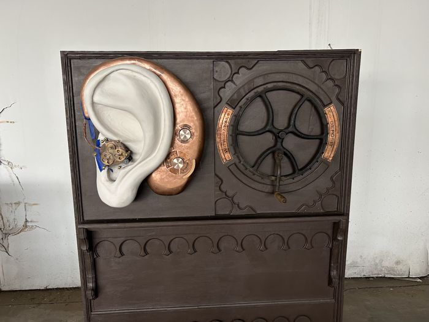
A confession booth with a motorized ear, built with Spatial Pixel. I did the motion and the dial encoders.
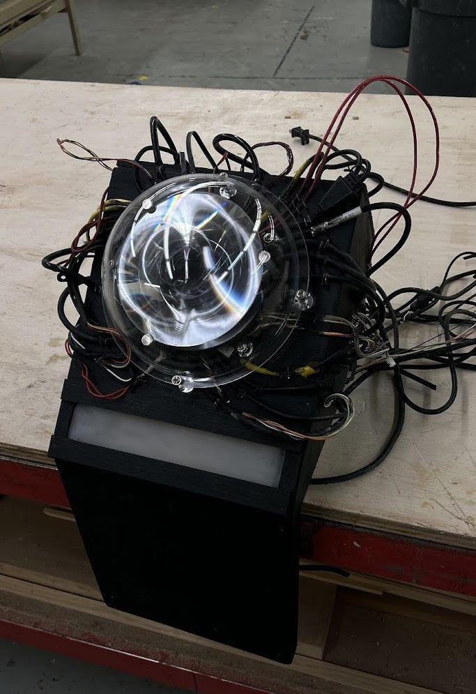
A mechanism to rotate a 26″ fiberglass eye hanging over the vault, driven live by Spatial Pixel's AI, with hardware and software safety redundancies because it hangs over people.
A vintage register that randomly presses its own buttons while staying usable. The actuation forces took a lot of fast prototyping.
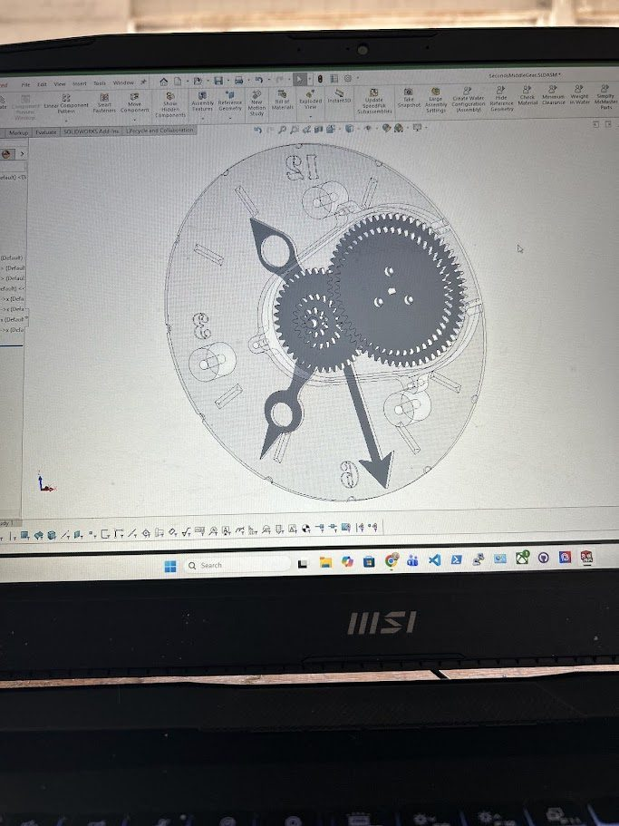